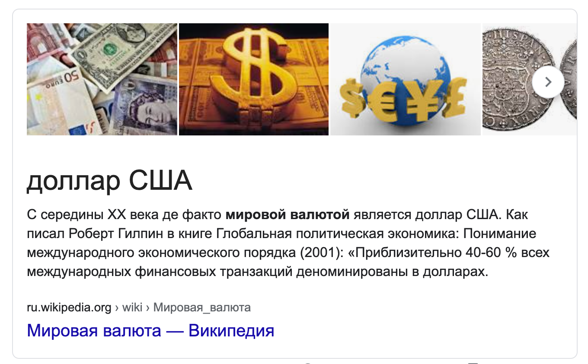

"Предсказание" Сергея Мавроди, 16 октября 2008 г.
Регистрация в телеграм-боте: @Mavrodi_robot

Регистрация в телеграм-боте: @Mavrodi_robot
Поскольку в настоящее время я получаю много писем по поводу моего прогноза о вероятном введении амеро, считаю необходимым уточнить этот свой прогноз (предсказание! :-)).
Нет. Амеро уже не будет. Поздно! Ибо евро рухнет тоже. Будет единая общемировая валюта. Амевро какое-нибудь или, там, UE (от USA-Europe). Собственно, после фактической национализации банков в ряде стран национальные валюты вообще теряют смысл, ибо никакого курса их уже нет. Курс устанавливает теперь ЦБ по своему усмотрению. (Ну, как я делал с акциями-билетами МММ. :-)) Странно, что этого никто пока, по-видимому, не понимает.

Итак.
Будет введена общемировая валюта (когда именно, определяется целым рядом фактором, в том числе и чисто технических, с которыми я, естественно, не знаком, а потому и делать более точных прогнозов не могу но уж в любом случае в самое ближайшее время), после чего наступит новая реальность. Всё на время успокоится, но спокойствие это будет обманчивым. Точнее, это будет и не спокойствие даже, собственно, а оцепенение.
После чего наступит Апокалипсис. Глад, мор, голодные бунты и пр. и пр. Мировая экономика рухнет. Ибо правильный путь разъединение, а не объединение. Индивидуализация, а не унификация. Неповторимость и непредсказуемость! Каждый должен идти СВОИМ путём, каждая страна.
Плановый и полностью контролируемый и управляемый мир и абсолютная власть государства, полное регулирование всего и вся (а именно это и произойдёт: чтобы не повторилось!.. мы извлекли уроки!..) это тупик.
И он [зверь, мировая ФСФР] сделает то что никому нельзя будет ни покупать, ни продавать, кроме того, кто имеет это начертание [какое-то разрешение этой мировой ФСФР, по всей видимости], или имя зверя, или число имени зверя. Апокалипсис 13:16-17.
Человек не Бог, и всего предусмотреть он не может. Мир сложнее. Новое это не просто улучшенное старое. Это именно новое. Оно рождается в муках, а не создаётся искусственно в стерильных лабораториях. Создаются же только гомункулусы. Но они нежизнеспособны.
Аминь!
Сергей Мавроди, 16 октября 2008
Регистрация в телеграм-боте: @Mavrodi_robot